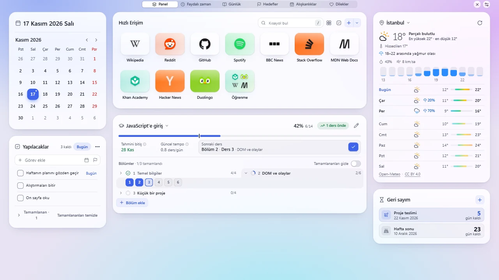
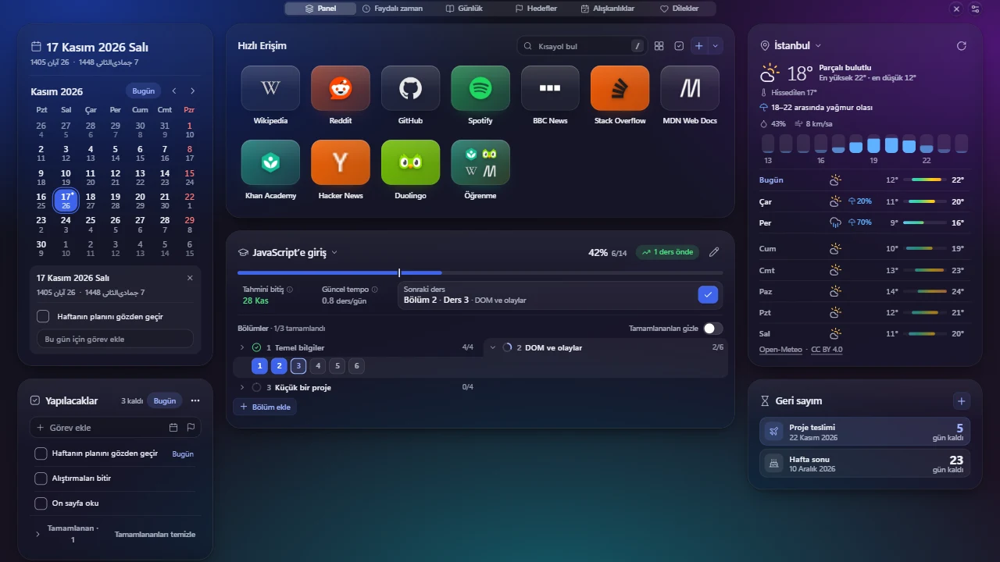

Chrome’un yeni sekmesinde kısayollar, görevler ve takvim
Tivona ile sık açtığınız siteleri ve bugünün yapılacaklarını aynı sekmede görün. Bir teslim tarihi yaklaşıyorsa takvimden günü seçip görevinizi ekleyin. Çalışmaya hazır olduğunuzda zamanlayıcıyı o görevden başlatabilirsiniz.
Bilgisayarda Chrome için ücretsizdir. Tivona yeni sekme sayfasının yerini alır ve Tivona hesabı gerektirmez.

Sitelerinizi düzenleyin ve gününüzü planlayın
Hızlı erişim ve yer işareti klasörleri
Sık kullandığınız siteleri iş, okul veya kişisel kullanım için klasörlere ayırın. Klavyeyle kısayol arayabilir, Chrome yer işaretlerinden bir klasörü içe aktarabilirsiniz.
Yapılacaklar listesi ve teslim tarihleri
Göreve teslim tarihi, öncelik, not ve alt adımlar ekleyin. Bugün yapılacakları ve gecikenleri görün. Takvimden bir gün seçerek o güne planlanan işlere ulaşın.
Miladi, İran ve hicri takvimler
Aylık takvimde miladi, İran güneş takvimi (Celâlî) ve hicri takvim arasında geçiş yapın. Tarihleri yan yana gösterebilirsiniz. İran takvimi görünümünde İran’daki tatil günleri gösterilir.
Pomodoro zamanlayıcısı ve odak süresi
Çalışma ve mola sürelerini ayarlayın veya kronometreyi kullanın. Görevin ayrıntılarından zamanlayıcıyı açıp harcadığınız süreyi kaydedin.

Panoda hangi araçların görüneceğini siz seçin. Hava durumuna bakabilir, geri sayım ekleyebilir, alışkanlıkları, hedefleri ve kurs ilerlemesini takip edebilir ya da günlük tutabilirsiniz.
İlk yeni sekmenizi hazırlayın
- Tivona’yı Chrome Web Mağazası’ndan yükleyin ve yeni bir sekme açın.
- Sık kullandığınız bir siteyi ekleyin veya bir göreve teslim tarihi verin.
- Ayarlardan dili, takvimi ve panoda görmek istediğiniz araçları seçin.
Sık sorulan sorular
Chrome yer işaretlerimi aktarabilir miyim?
Hızlı erişimde Chrome yer işaretlerinden içe aktarma seçeneğini açın. Tivona izin ister ve seçtiğiniz klasörü kopyalar.
Başka bir yeni sekme eklentisi kullanıyorsam ne olur?
Chrome yeni sekme sayfasının yönetimini aynı anda tek bir eklentiye verir. Chrome’un Uzantılar sayfasından hangi eklentilerin etkin kalacağını seçebilirsiniz.
Görevlerimi başka bir bilgisayara nasıl taşırım?
Ayarlar → Veri bölümünden yedek alın ve bu dosyayı diğer bilgisayardaki Tivona’da geri yükleyin. Görevleriniz yedeğe dahildir.
Çevrimdışı kullanım ve gizlilik
Takvim, görevler, günlük ve zamanlayıcı çevrimdışı çalışır. Siteleri açmak, hava durumunu veya çevrimiçi simgeleri almak için bağlantı gerekir.
Görevleriniz, günlüğünüz ve odak geçmişiniz bu cihazda saklanır. Chrome senkronizasyonu açıksa bazı ayarlar ve kısayollar eşitlenebilir. PostHog için yapılandırılan sürümlerde kullanım verilerini paylaşmak isteğe bağlıdır ve bu seçenek başlangıçta kapalıdır. Gizlilik politikası (İngilizce)
Yardım ve geri bildirim
Güncelleme sonrasında verileri geri yüklemek için Ayarlar → Veri → Otomatik yedekler bölümünü açın. Yardım için Tivona desteğine e-posta gönderebilir veya Chrome Web Mağazası’ndaki Tivona sayfasının destek bölümünü kullanabilirsiniz.